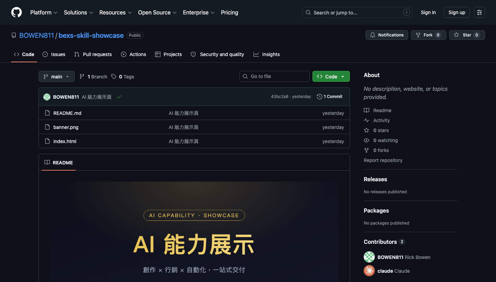

1
/
9
BEXS AI 學院 · 會員專屬
給你的 AI
裝上「
超能力
」
12 個技能 ·
不用懂程式
·
不用付費帳號
· 裝了馬上用
每天都用得到
新手友善
資料不外流
講一句就會做
這包裡面有什麼
三大類 ·
12 個技能
🌟
每天用得到（7）
文件 · 表格 · 檔案 · PDF · 圖片 · 摘要 · 寫作
🎬
創作好用（2）
媒體下載 · 提示詞翻譯
🎨
設計類（3）
視覺設計 · UIUX 設計庫 · 品牌規範
🔜
進階（之後開放）
YouTube 學習 · 切短片 · 聲音克隆…
PART 1 · 1/2
每天都用得到
📑
文件製作
document-maker
用講的做出
Word/Excel/簡報/PDF
，Excel 自動帶公式。
📊
表格分析
data-analyzer
丟 Excel/CSV，直接問：
誰最高、幫我畫圖
。
📁
檔案整理
file-organizer
亂掉的下載/桌面自動分類，
只搬不刪
。
📄
PDF 工具
pdf-toolkit
合併、拆開、抽頁、轉文字、
壓縮變小
。
PART 1 · 2/2
每天都用得到
🖼️
圖片工具
image-toolkit
一批圖一次
縮小 / 壓縮 / 轉檔 / 加浮水印
。
📰
網頁摘要
web-summarizer
丟一個網址或長文，
30 秒給你重點
。
✍️
寫作助手
writing-assistant
寫 / 改 email、貼文，還能
「去掉 AI 味」
。
PART 2
創作 · 內容好用
⬇️
媒體下載
media-grabber
下載
YouTube / TikTok / IG
影片，或只抓 mp3 音檔。
🌐
提示詞翻譯
prompt-translator
打中文 → 出
道地英文生圖提示詞
（餵 Midjourney 等）。
PART 3
設計 · 視覺
🎨
視覺設計
canvas-design
做
海報、圖卡、視覺藝術
（輸出 PNG/PDF）。
🧩
UIUX 設計庫
ui-ux-pro-max
配色、字體、版型、元件範例的
設計智庫
。
🏷️
品牌規範
brand-guidelines
把
品牌色 / 字體
統一套到文件 / 簡報。
下載
從哪裡下載技能包?

👉 進 GitHub 頁，點右上角綠色
Code
按鈕（圈起來那個）→ 下拉選
Download ZIP
→ 解壓縮，再照下一頁安裝。
安裝
3 步驟 · 新手照做
1
下載這個包：GitHub 右上角
Code → Download ZIP
2
一鍵全裝：
for d in skills/*/*/; do cp -r "$d" ~/.claude/skills/; done
3
重開 Claude Code →
用講的就會觸發
怎麼用
不用記指令 · 直接「用講的」
🌐
提示詞翻譯
「咖啡廳看書的女生、陽光、電影感 → 翻成英文提示詞」
⬇️
媒體下載
貼連結 +「下載這支影片」或「只要 mp3」
📊
表格分析
「分析這個 sales.csv，哪個月賣最好？畫長條圖」
📑
文件製作
「把這些數字做成 Excel，要有合計公式」
🔁 不用說「用某某技能」—— 講你要的結果，它看懂就自動用對的技能。
開始吧
先從「
每天用得到
」
那幾個開始
熟了再加 —— 別一次全開來亂試。
BEXS AI 學院
會員 / 學生專用
← → 翻頁 · 點圓點跳頁